<DOCUMENT>
<TYPE>EX-99.2
<SEQUENCE>3
<FILENAME>tsm-ex992_7.htm
<DESCRIPTION>EX-99.2
<TEXT>
<html><body><p align="center">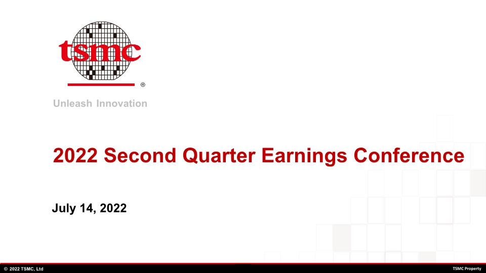</p><p style="margin-top:0pt;margin-bottom:0pt;font-size:1pt;line-height:0pt;color:#FFFFFF;font-family:Times New Roman;">2022 Second Quarter Earnings Conference  July 14, 2022 </p><p style="margin-top:9pt; margin-bottom:9pt; border-top:2pt solid gray; page-break-after:always"></p><p align="center">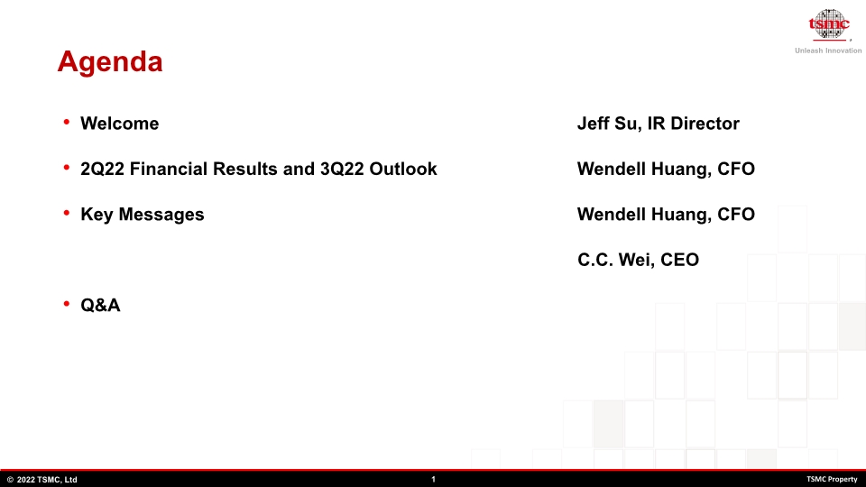</p><p style="margin-top:0pt;margin-bottom:0pt;font-size:1pt;line-height:0pt;color:#FFFFFF;font-family:Times New Roman;">Agenda Welcome					     	             Jeff Su, IR Director
2Q22 Financial Results and 3Q22 Outlook	    	             Wendell Huang, CFO
Key Messages 			                  	             Wendell Huang, CFO                                                    						                          C.C. Wei, CEO
Q&amp;A						 </p><p style="margin-top:9pt; margin-bottom:9pt; border-top:2pt solid gray; page-break-after:always"></p><p align="center">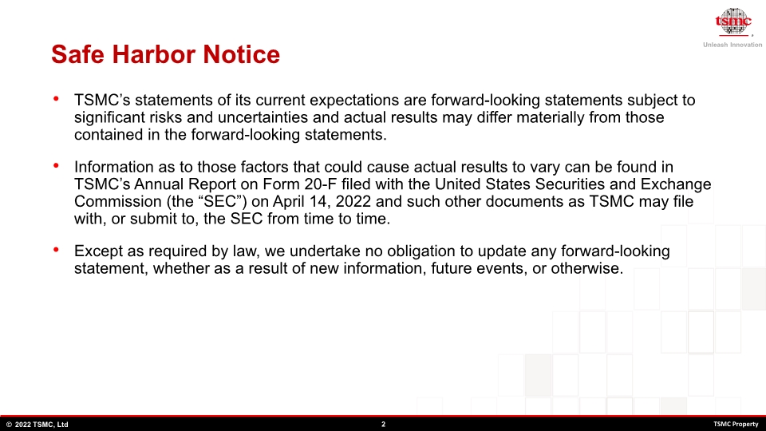</p><p style="margin-top:0pt;margin-bottom:0pt;font-size:1pt;line-height:0pt;color:#FFFFFF;font-family:Times New Roman;">Safe Harbor Notice TSMC&#8217;s statements of its current expectations are forward-looking statements subject to significant risks and uncertainties and actual results may differ materially from those contained in the forward-looking statements.

Information as to those factors that could cause actual results to vary can be found in TSMC&#8217;s Annual Report on Form 20-F filed with the United States Securities and Exchange Commission (the &#8220;SEC&#8221;) on April 14, 2022 and such other documents as TSMC may file with, or submit to, the SEC from time to time.

Except as required by law, we undertake no obligation to update any forward-looking statement, whether as a result of new information, future events, or otherwise. </p><p style="margin-top:9pt; margin-bottom:9pt; border-top:2pt solid gray; page-break-after:always"></p><p align="center">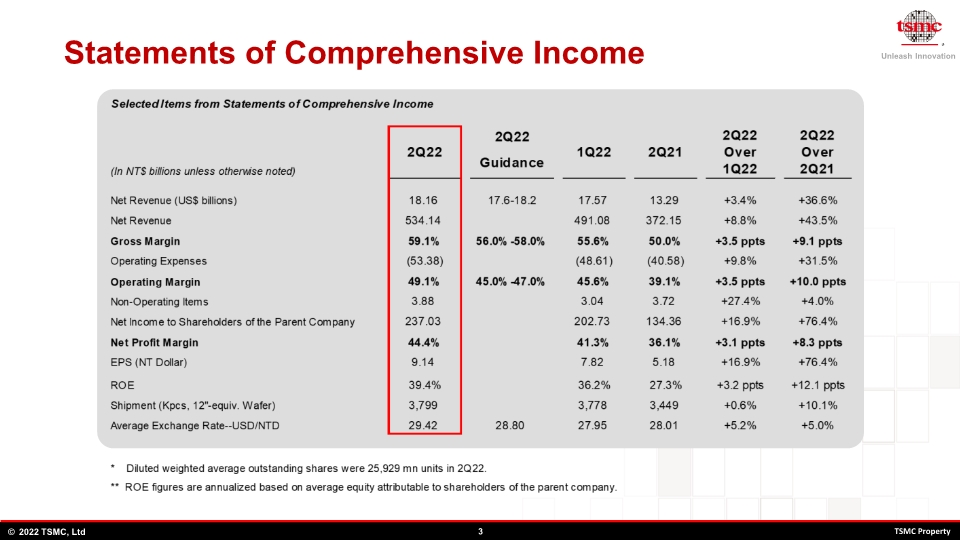</p><p style="margin-top:0pt;margin-bottom:0pt;font-size:1pt;line-height:0pt;color:#FFFFFF;font-family:Times New Roman;">Statements of Comprehensive Income </p><p style="margin-top:9pt; margin-bottom:9pt; border-top:2pt solid gray; page-break-after:always"></p><p align="center">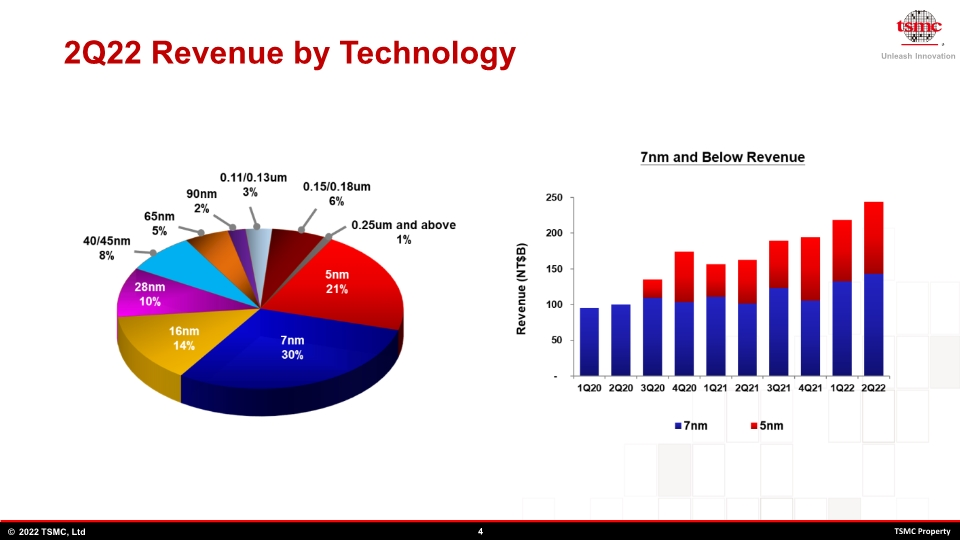</p><p style="margin-top:0pt;margin-bottom:0pt;font-size:1pt;line-height:0pt;color:#FFFFFF;font-family:Times New Roman;">2Q22 Revenue by Technology </p><p style="margin-top:9pt; margin-bottom:9pt; border-top:2pt solid gray; page-break-after:always"></p><p align="center">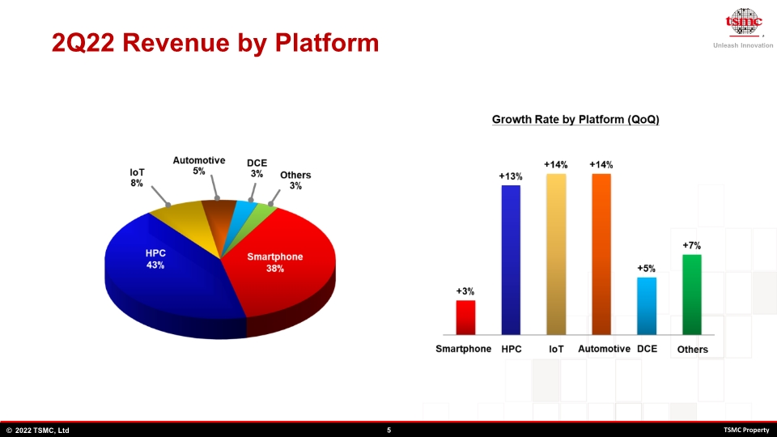</p><p style="margin-top:0pt;margin-bottom:0pt;font-size:1pt;line-height:0pt;color:#FFFFFF;font-family:Times New Roman;">2Q22 Revenue by Platform </p><p style="margin-top:9pt; margin-bottom:9pt; border-top:2pt solid gray; page-break-after:always"></p><p align="center">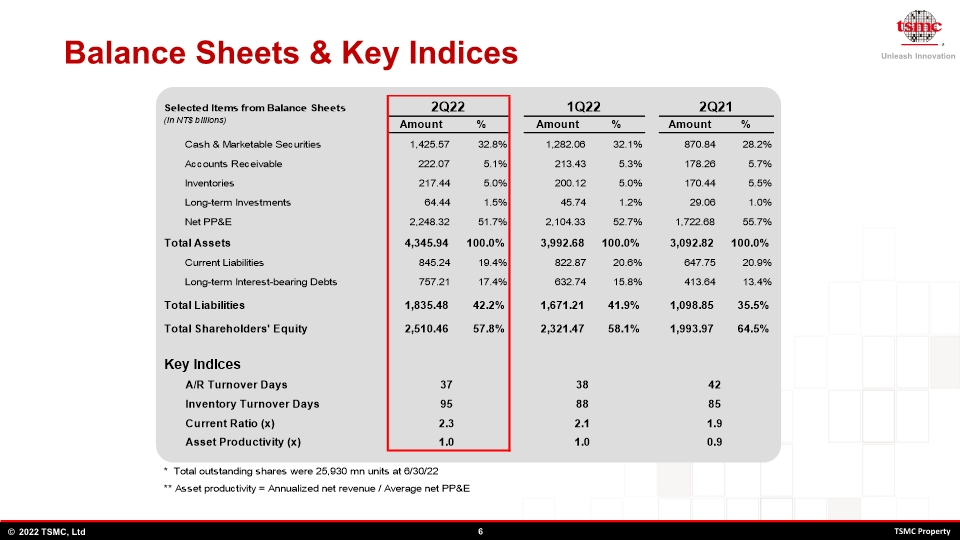</p><p style="margin-top:0pt;margin-bottom:0pt;font-size:1pt;line-height:0pt;color:#FFFFFF;font-family:Times New Roman;">Balance Sheets &amp; Key Indices </p><p style="margin-top:9pt; margin-bottom:9pt; border-top:2pt solid gray; page-break-after:always"></p><p align="center">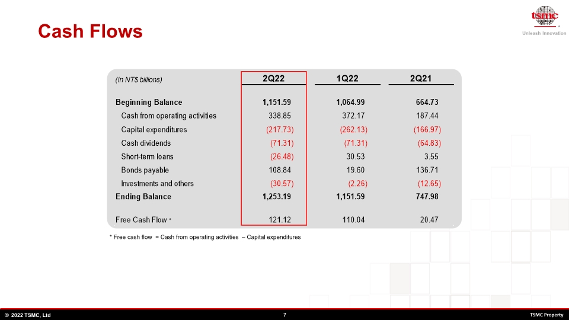</p><p style="margin-top:0pt;margin-bottom:0pt;font-size:1pt;line-height:0pt;color:#FFFFFF;font-family:Times New Roman;">Cash Flows * Free cash flow  = Cash from operating activities  &#8211; Capital expenditures * </p><p style="margin-top:9pt; margin-bottom:9pt; border-top:2pt solid gray; page-break-after:always"></p><p align="center">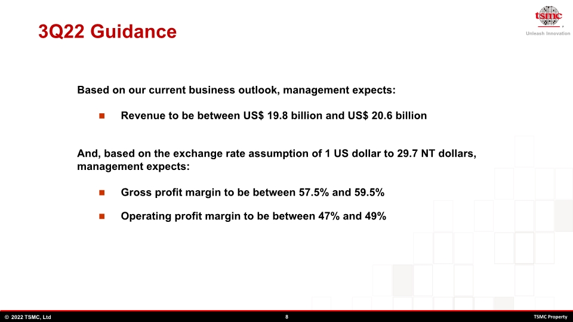</p><p style="margin-top:0pt;margin-bottom:0pt;font-size:1pt;line-height:0pt;color:#FFFFFF;font-family:Times New Roman;">3Q22 Guidance Revenue to be between US$ 19.8 billion and US$ 20.6 billion Based on our current business outlook, management expects: And, based on the exchange rate assumption of 1 US dollar to 29.7 NT dollars, management expects: Gross profit margin to be between 57.5% and 59.5% Operating profit margin to be between 47% and 49% </p><p style="margin-top:9pt; margin-bottom:9pt; border-top:2pt solid gray; page-break-after:always"></p><p align="center">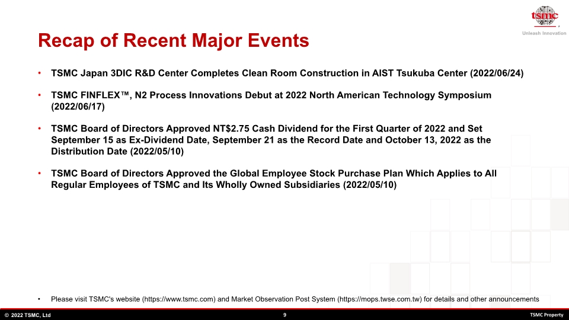</p><p style="margin-top:0pt;margin-bottom:0pt;font-size:1pt;line-height:0pt;color:#FFFFFF;font-family:Times New Roman;">Recap of Recent Major Events Please visit TSMC&apos;s website (https://www.tsmc.com) and Market Observation Post System (https://mops.twse.com.tw) for details and other announcements TSMC Japan 3DIC R&amp;D Center Completes Clean Room Construction in AIST Tsukuba Center (2022/06/24)
TSMC FINFLEX&#8482;, N2 Process Innovations Debut at 2022 North American Technology Symposium (2022/06/17)
TSMC Board of Directors Approved NT$2.75 Cash Dividend for the First Quarter of 2022 and Set September 15 as Ex-Dividend Date, September 21 as the Record Date and October 13, 2022 as the Distribution Date (2022/05/10)
TSMC Board of Directors Approved the Global Employee Stock Purchase Plan Which Applies to All Regular Employees of TSMC and Its Wholly Owned Subsidiaries (2022/05/10)


 </p><p style="margin-top:9pt; margin-bottom:9pt; border-top:2pt solid gray; page-break-after:always"></p><p align="center">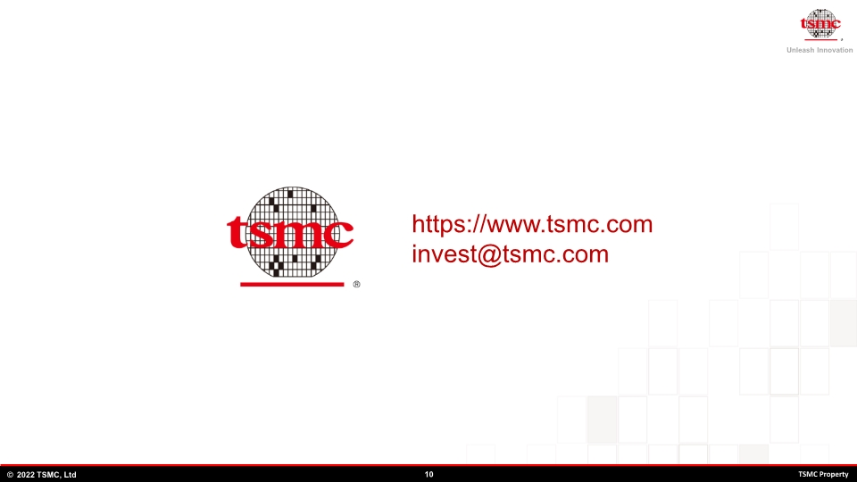</p><p style="margin-top:0pt;margin-bottom:0pt;font-size:1pt;line-height:0pt;color:#FFFFFF;font-family:Times New Roman;">https://www.tsmc.com invest@tsmc.com </p><p style="margin-top:9pt; margin-bottom:9pt; border-top:2pt solid gray; page-break-after:always"></p></body></html>
</TEXT>
</DOCUMENT>
